Projektets udgangspunkt
Projektet er lavet på 2. semester i modulet Webapp, og vi var fire i gruppen. Opgaven var at lave en webapp til Alive Festival, som man kan bruge på mobilen både før og midt i festivalen. Derfor er alt bygget mobile first.
Case 01 · Gruppeprojekt · Webapp
En mobile first webapp, hvor festivalgæster kan finde program, kort, billetter og praktisk information samlet ét sted.


Projektet er lavet på 2. semester i modulet Webapp, og vi var fire i gruppen. Opgaven var at lave en webapp til Alive Festival, som man kan bruge på mobilen både før og midt i festivalen. Derfor er alt bygget mobile first.
Alive Festival / Projektproces
01 / Forstå gæsterne og festivalen
Vi startede med at undersøge, hvem der tager til Alive, og hvad de har brug for, når de står på en festivalplads med telefonen i hånden. Vi segmenterede målgruppen både demografisk og psykografisk og lavede ud fra det to personas: Kasper på 23, der bor i kollektiv i Aalborg og overvejer at tage afsted alene, og Maja på 26, der læser kommunikation og gerne vil vide, hvad der sker og hvornår, uden at planlægge sig ihjel.
Til hver persona skrev vi to scenarier: et før festivalen (“Kan jeg overskue det her?” og “Jeg vil gerne have ro i hovedet”) og et under festivalen (“Det er rart ikke at føle sig dum” og “Hvad var det nu, jeg glædede mig til?”).
Vi ville tage udgangspunkt i brugerne og ikke i det visuelle. Scenarierne viste, hvornår appen skal bruges, og hvad man skal kunne finde hurtigt.
Segmentering · Personas · Scenarier · Mobilbrug
Output
En segmentering og to personas med hver deres behov. Kasper vil føle sig tryg og vide, hvornår bussen kører. Maja vil have sit eget program samlet ét sted.
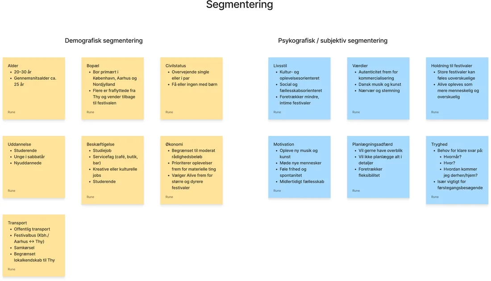
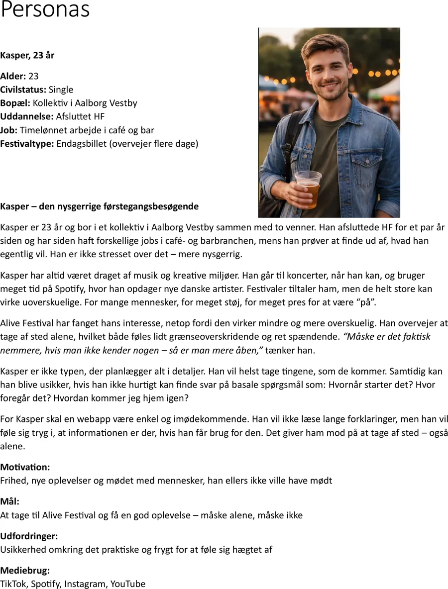
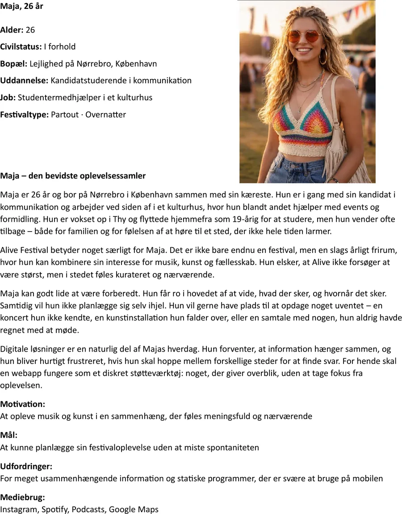
02 / Samle og prioritere indsigter
Vi samlede alt det indhold, vi kunne komme i tanke om, i et affinity diagram og sorterede det i grupper som Festivalen, Praktiske oplysninger, Kort, Favoritter, Musik, Kunst og Udflugter.
Så vi kunne se, hvad der hører sammen, og hvad der skal være nemmest at finde i appen.
Brainstorm · Braindump · Affinity diagram
Output
Et overblik over indholdet, sorteret i grupper.
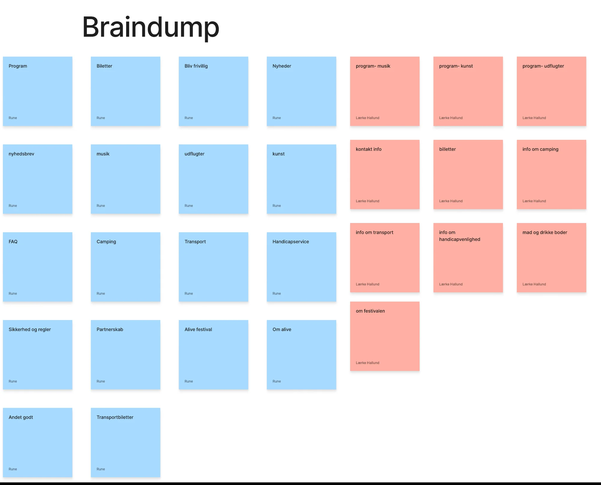
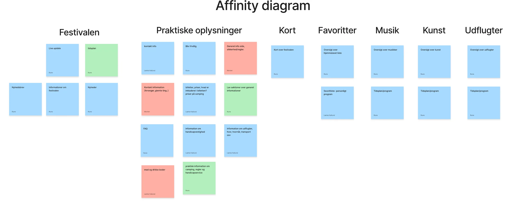
03 / Fra indsigt til første struktur
Ud fra indholdet lavede vi et content sitemap, så vi kunne se, hvordan appens sider hænger sammen. Så besluttede vi, at forsiden skal svare på ét spørgsmål: Hvad sker der nu? Resten af appen ligger i en menu i bunden med Program, Kort, Hjem, Favoritter og Mere, så den minder om apps, man kender i forvejen.
Vi tegnede lo-fi wireframes til forsiden og siderne med cards, hvor kasserne bare viser, hvor video, billeder, tekst og knapper skal ligge.
Med lo-fi wireframes kan man tale om placering uden at hænge fast i farver og billeder.
Content sitemap · Wireframes · Mobile first · Menu i bunden · Cards
Output
Et content sitemap og en fælles struktur, som vi alle kunne designe videre ud fra.
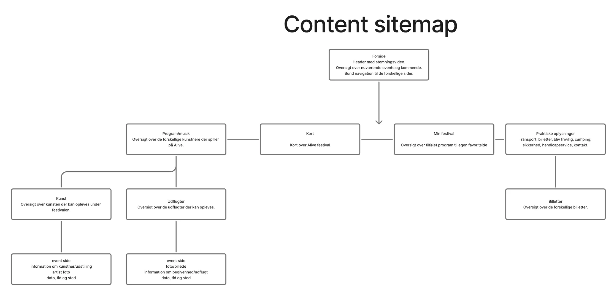
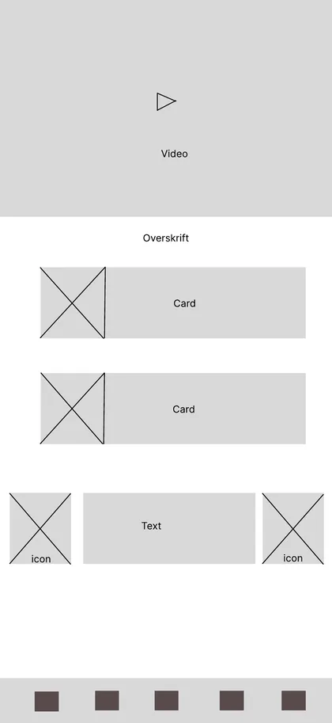
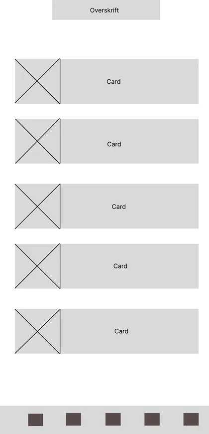
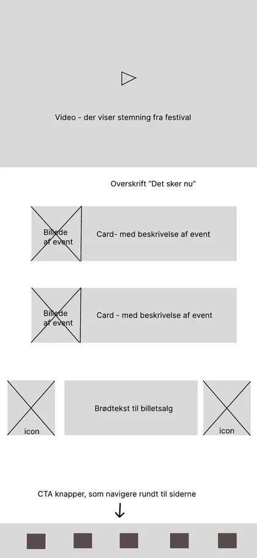
04 / Struktur, UI og identitet
Vi lavede mockups til alle skærmene. Mørkegrøn og lysegul er grundfarverne, og pink bruges til cards i programmet, så det føles som en festival. Håndtegnede illustrationer og Alive-logoet går igen på tværs af siderne.
Alt er lavet til mobil med store trykflader og korte tekster, fordi man ofte står midt i en menneskemængde, når man åbner appen.
Et ensartet udtryk gør appen nem at gennemskue, også når man har travlt eller kigger på skærmen i solen.
Mockups · Farver · Illustrationer · Mobile first
Output
Et samlet design til forside, program, kort, billetter, favoritter og praktisk information.
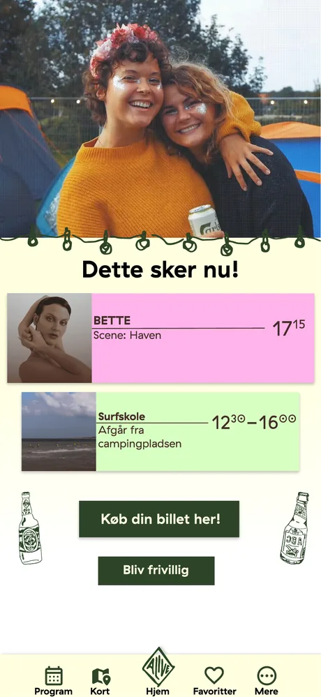
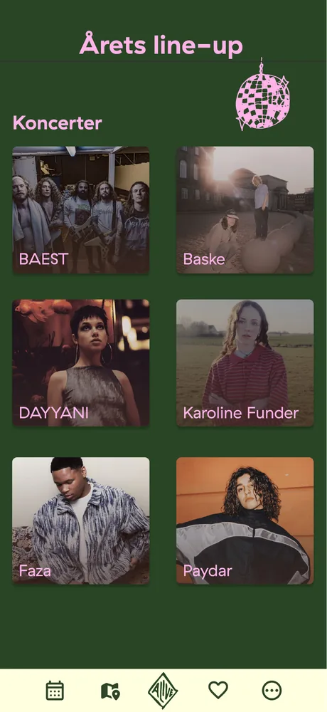
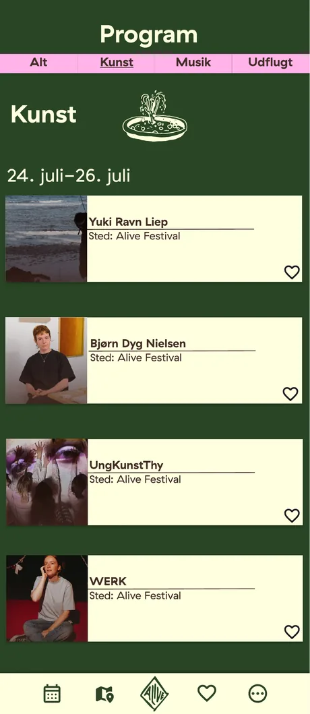
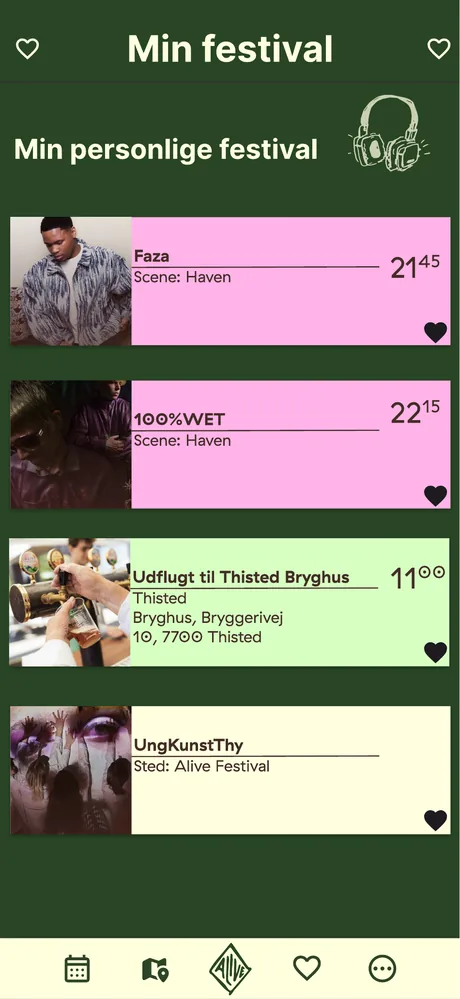
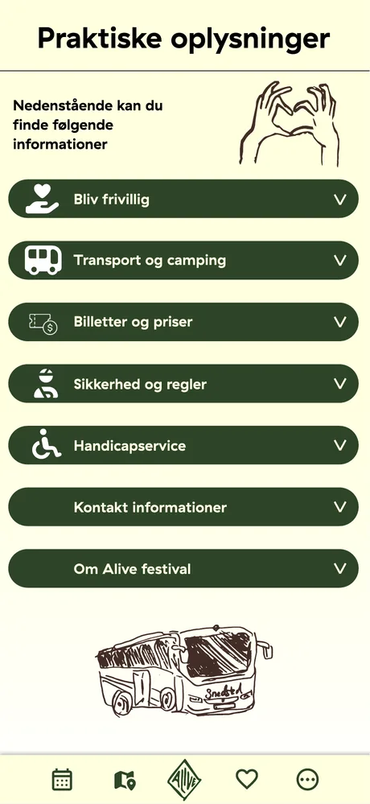
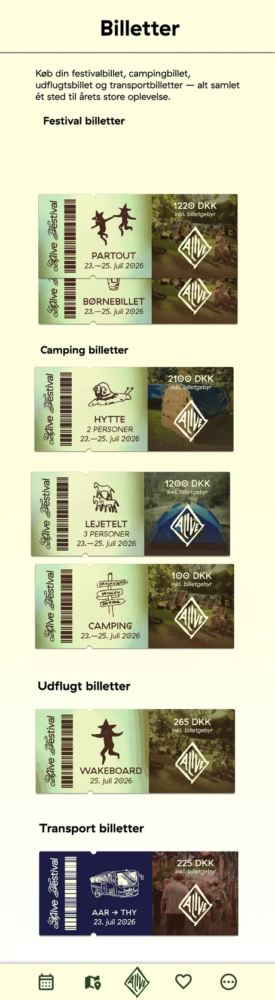
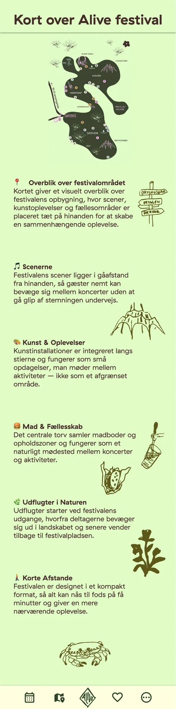
05 / Afprøv og forbedr
Vi lavede en think aloud test, hvor en testbruger skulle løse opgaver i appen og sige sine tanker højt undervejs. Opgaverne var fx at købe en billet, finde årets line-up, tilføje noget til sine favoritter og finde ud af, hvordan man bliver frivillig.
Vi testede også, om man kunne finde kortet over festivalen, og om man kunne se, hvad der sker lige nu.
Test viser, hvor designet ikke virker, mens det stadig er nemt at ændre.
Think aloud · Fokuspunkter · Opgaver · Observation
Output
Et testforløb med klare opgaver, som viste, om man kan finde rundt uden hjælp.
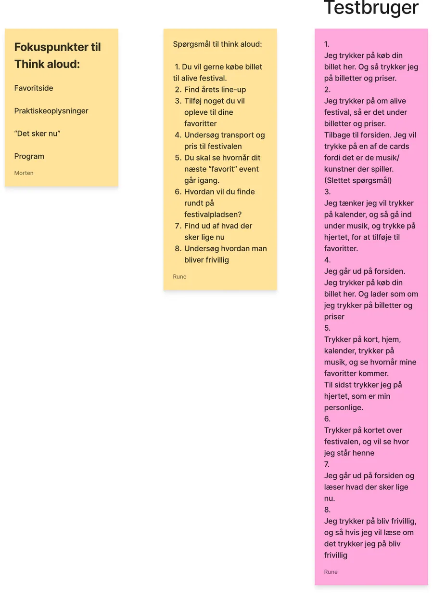
06 / Den færdige webapp
Resultatet er en webapp i HTML, CSS og JavaScript, bygget mobile first. På forsiden kan man se, hvad der sker nu, og køb en billet. I Program kan man skifte mellem musik, kunst og udflugter og gemme sine favoritter, som samles i Min festival.
Kortet viser scener, madboder og udflugter, og billetsiden samler festival-, camping-, udflugts- og transportbilletter.
Vi ville se, om appen passede til Kasper og Maja, som vi havde designet den til.
HTML · CSS · JavaScript · Mobile first
Output
En webapp, hvor gæsterne hurtigt får overblik over program, kort, billetter og praktisk information.
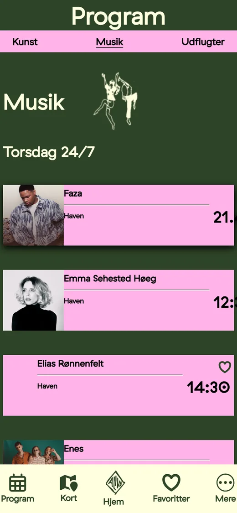
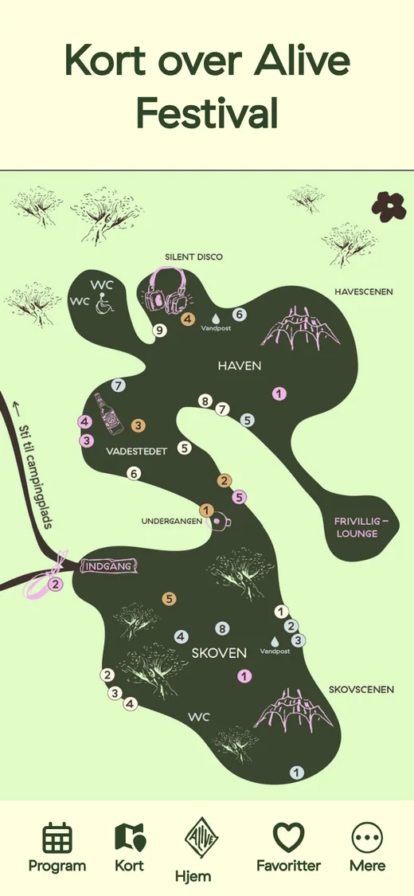
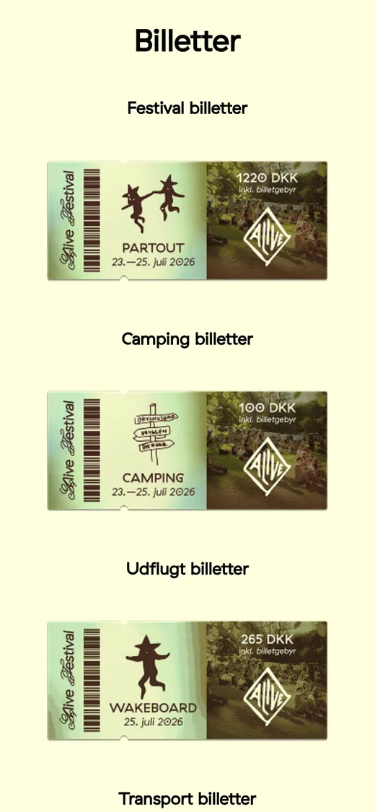
Min rolle og refleksion
Vi arbejdede i gruppen med personas, struktur, design, test og kode.
Det vigtigste, vi tog med os, er at starte i brugerne og tænke mobilen først. Når man bygger til en telefon, bliver man tvunget til at prioritere, og det gjorde appen mere overskuelig. Vi kunne godt tænke os at teste med flere brugere og lade favoritterne blive gemt, så de stadig er der næste gang man åbner appen.